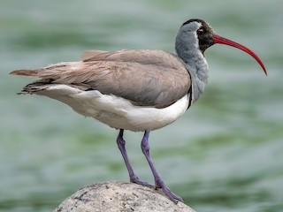

Ibidorhyncha struthersii
The ibis-like Ibisbills have shorter legs than the closely related Stilts and Avocets. It has three toes which point forward, they don't have a hind toe. The outer and middle toes are semi-webbed and it has a long red neck, a black face and a black breast stripe.